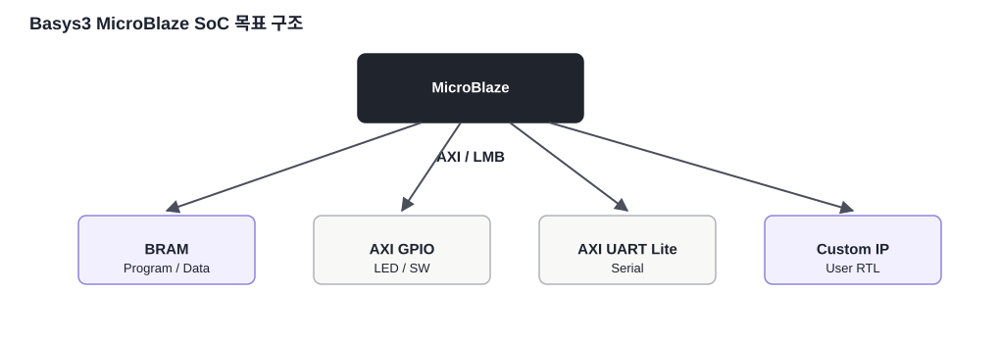
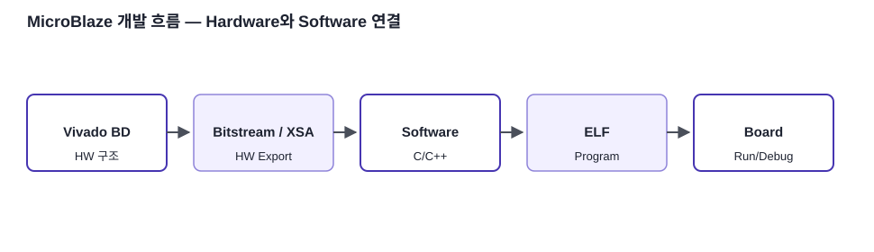

CPU
MicroBlaze가 Software를 실행합니다.
FPGA / SoC 개념 · 09
MicroBlaze, BRAM, AXI GPIO/UART/Timer, Custom IP를 하나의 Block Design으로 통합하는 Basys3 SoC 구조를 정리합니다.
MicroBlaze가 Software를 실행합니다.
BRAM에 Program/Data를 배치합니다.
AXI Interconnect를 통해 GPIO·UART·Timer·Custom IP를 연결합니다.

MicroBlaze는 FPGA Logic에 구현되는 Processor이고 Program Code와 Data는 BRAM에 배치할 수 있습니다. LMB를 사용하면 On-chip BRAM에 낮은 지연으로 접근할 수 있습니다.
Vivado에서 Hardware Platform을 만들고 Bitstream/XSA를 생성한 뒤 Software Toolchain에서 MicroBlaze Program을 작성합니다. FPGA Fabric의 회로 구조와 CPU Software는 분리되어 있지만 Register Map과 AXI로 연결됩니다.

본문의 기술 내용과 교육용 재작성 그림은 아래 공식 문서를 기준으로 검증했습니다. 원문 전체를 복제하지 않고 핵심 구조를 학습용으로 재구성했습니다.